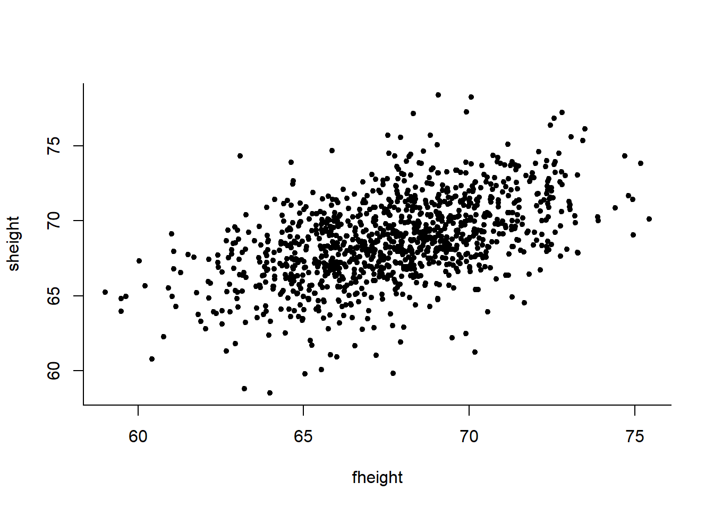

1 線形回帰分析 - Linear Regression
“Linear Regression is by far a most useful tool to analyze data that human being has.”
「線形回帰は、いまのところ、人類が持てる最高のデータ分析ツールだ」 - by Prof.Simonoff Jeffrey
回帰分析をするとき、たとえば身長と体重、人口密度と犯罪率、父親の身長と息子の身長、マーケティング予算と売上など、 ２つの要素 - 「変数」と呼び、それぞれ\(x, y\)で表現することが多いのですが、その関係に興味があります。
\(y\) を興味のある変数、より理解したい変数とし、つまり、target variable, (ターゲット・目的変数)と呼びます。
この\(y\)を、\(x\) を使って予測したり分析したり説明したりするので、\(x\)をpredicting variable(説明変数)と呼びます。
例えば、あなたがマーケティングの責任者であれば、マーケティング予算が、説明変数\(x\)、それによって予測する売上が、目的変数\(y\)ということになります。これは、マーケティング予算は適切な権限があれば、決めることができる(操作可能)ですが、売上は結果に過ぎないため、売上を直接コントロールすることはできないからです。
また、もし「どこに住もうかな」とあなたが考えているとすると、 人口密度が説明変数 \(x\) で、犯罪率が目的変数 \(y\) だということになります。 住む場所、つまり人口密度はこれから選ぶことができますが、犯罪率自体はコントロールできないからです。
このように、\(x\) によって説明する、\(y\) の変化を知ること、しかも、シンプルに直線で知ることを、 「線形回帰分析」といいます。
#install.package("UsingR")
library(UsingR)## Loading required package: MASS##
## Attaching package: 'MASS'## The following object is masked from 'package:dplyr':
##
## select## Loading required package: HistData## Loading required package: Hmisc## Loading required package: lattice## Loading required package: survival## Loading required package: Formula##
## Attaching package: 'Hmisc'## The following objects are masked from 'package:dplyr':
##
## src, summarize## The following objects are masked from 'package:base':
##
## format.pval, units##
## Attaching package: 'UsingR'## The following object is masked from 'package:survival':
##
## cancerdata(fater.son)## Warning in data(fater.son): data set 'fater.son' not foundplot(sheight ~ fheight, data=father.son,bty="l",pch=20)
\[ y_i = \beta_0 + \beta_1 x_{i} + \epsilon_i \]